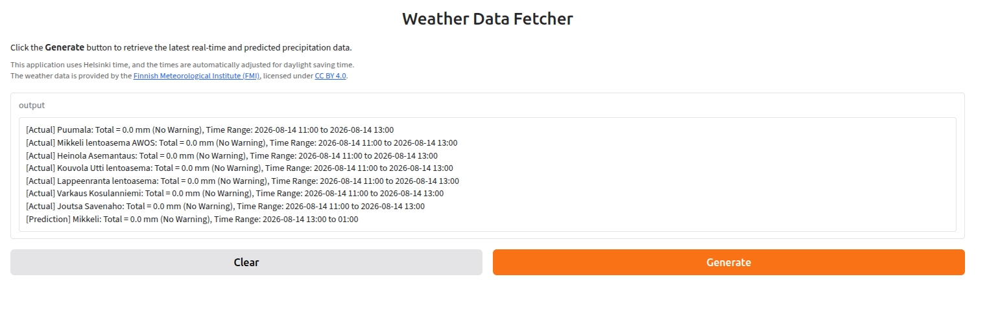

Precipitation Monitor
A Gradio web app for monitoring real-time and forecasted precipitation in South Savo, Finland.

Click the screenshot to view it full-size
What it does
- Fetches actual precipitation data from FMI observation stations across South Savo
- Fetches forecasted precipitation from FMI's Harmonie surface model
- Classifies precipitation into warning levels (Mild, Moderate, Severe) based on configurable thresholds
- Displays results in a simple Gradio interface, times shown in Helsinki local time
Built with
- Python, Gradio
- FMI Open Data API (WFS)
- Deployed on Render